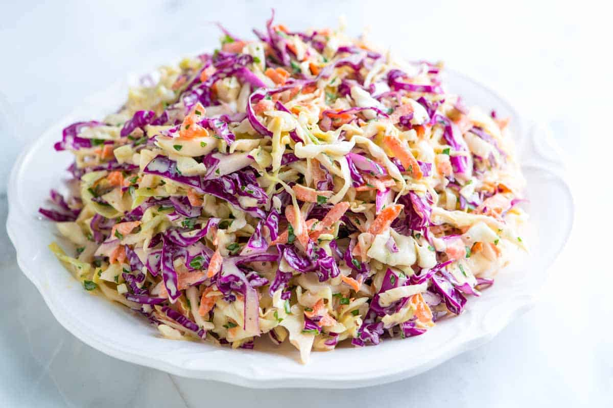

Coleslaw

Description
Coleslaw recipe to be made as a side to a burger or any other meal you wish.
A very simple and fast coleslaw recipe
Ingredients
- 1 medium cabbage (about 2 pounds), outer leaves removed
- 3 medium carrots, peeled and shredded
- 1/2 cup loosely packed fresh parsley leaves, coarsely chopped
- 1 cup (170 grams) mayonnaise, try our homemade mayonnaise recipe
- 2 tablespoons apple cider vinegar or more to taste
- 2 tablespoons Dijon mustard or coarse ground mustard
- 1 teaspoon celery seeds
- 1/4 teaspoon fine sea salt or more to taste
- 1/4 teaspoon fresh ground black pepper or more to taste
- 1 to 2 teaspoons sugar or honey, optional, add for a sweeter coleslaw
Instructions
- Quarter the cabbage through the core, and then cut out the core. Cut each quarter crosswise in half and finely shred. Place the shredded cabbage in a very large bowl (you will have 6 to 8 cups).
- Add the shredded carrot and parsley to the cabbage and toss to mix.
- In a separate bowl, stir the mayonnaise, vinegar, mustard, celery seeds, salt, and pepper together. Taste for acidity and seasoning, then adjust as desired. If the dressing tastes too tart and you prefer a sweeter coleslaw, stir in the optional sugar.
- Pour two-thirds of the dressing over the cabbage and carrot then mix well. (Clean hands are the quickest tool).
- If the coleslaw seems dry, add a little more of the dressing. Eat right away or let it sit in the refrigerator for about an hour to let the flavors mingle and the cabbage to soften.